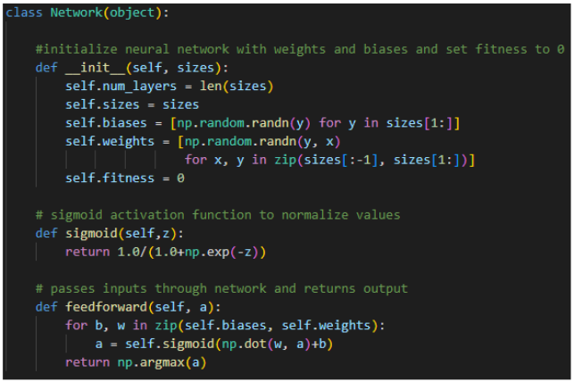

Concept: An AI that learns to play Doodle jump. The AI operated by learning which way to move given the nearest platform above and below it.
Motivation: Wanted to code an AI using a genetic algorithm. Also wanted to see if I could make an AI without using libraries with built-in AI functions.
Neural Network Object with Customizable size:

The Crossover Function (ncrossover) creates two child neural networks from two parent networks. (shown below)
The New Population Function (newpop) selects the top 20 networks from the last generation, then generates mutated networks and children networks to the new population. (shown below)
Conclusions: The screen movement and player physics didn't work as expected many times over, but eventually we were able to fix the bug. Also, the AI wasn't learning over time at first, but after we optimized the population selection and generation functions, the AI was able to create better populations each generation and improve over time.